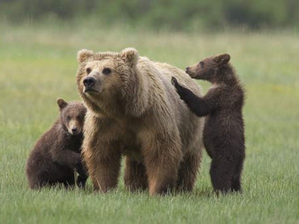

Bear Majestic and fascinating, the brown bear (Ursus arctos L.) has always aroused man's interest, to the extent that its history has often been interwoven with that of our species. Persecuted in every way possible for centuries, the bear remained confined in a limited area of the western Trentino which, to protect the plantigrade, became the Adamello Brenta Nature Park. In 1996, to avoid the imminent extinction of the species, the Park launched the Life Ursus reintroduction project. Ten brown bears were introduced between 1999 and 2002. These adapted well to the new living environment and originated a population which today numbers more than 20. The definitive return of the species to the Alps is, however, still a long way off. Despite the suitable environment throughout most of the Alps, the future of the bear is closely bound to development of a culture of cohabitation between men and bears. The Park's commitment therefore continues through scientific research and an awareness heightening campaign run by the Brown Bear Research and Conservation Group in the context of the Bear Project. The park is also a partner of the LIFE + project ARCTOS Brown Bear Conservation: coordinated actions for the areal Alpine and Apennine, an initiative to encourage the protection of the brown bear populations in the Alps and the Apennines and to support their numerical expansion.